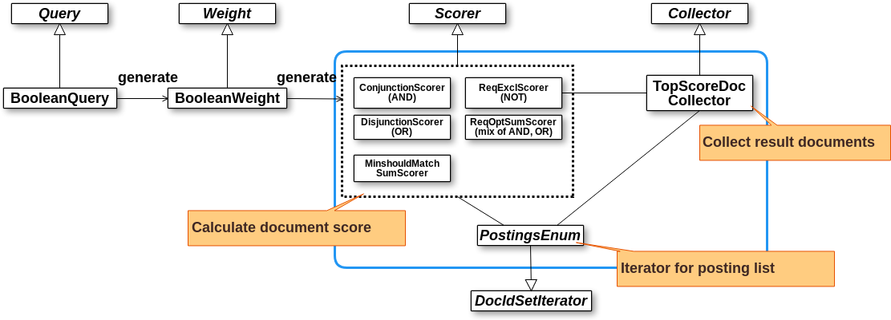

Efficient top-k query processing in Lucene 8
Tomoko Uchida
2019/02/26 @ Roppongi Hills
Who am I
Lucene/Solr 8.0 and Elasticsearch 7.0 are coming...
Summary of this talk
Top-k query processing / scoring will be much faster!
Especially effective in disjunction (OR) query
Also works for complex queries such as PhraseQuery, WildcardQuery and their combinations
Exact total hits count will not be returned (in default)
Papers
[1] T. Strohman, H. Turtle, and B. Croft. Optimization strategies for complex queries. In Proceedings of ACM SIGIR conference, 2005.
[2] K. Chakrabarti, S. Chaudhuri, V. Ganti. Interval-Based Pruning for Top-k Processing over Compressed Lists, in Proc. of ICDE, 2011.
[3] A. Z. Broder, D. Carmel, M. Herscovici, A. Soffer, J. Y. Zien. Efficient Query Evaluation using a Two-Level Retrieval Process, in Proc. of CIKM, 2003.
[4] S. Ding and T. Suel. Faster top-k document retrieval using block-max indexes. SIGIR, 2011.
How much faster? - AND query
http://people.apache.org/~mikemccand/lucenebench/AndHighHigh.html
How much faster? - OR query (1)
http://people.apache.org/~mikemccand/lucenebench/OrHighHigh.html
How much faster? - OR query (2)
http://people.apache.org/~mikemccand/lucenebench/OrHighMed.html
How much faster? - Term query
http://people.apache.org/~mikemccand/lucenebench/Term.html
Posting list retrieval and the challenge on disjunction
Query "search OR engine"
MaxScore
Introduced by H.R.Turtle and J.Flood in 1995
Interval-based pruning
MaxScore variant adopted to block compressed indexes [2]
WAND
Special operator proposed in [3]
"WAND" is the abbreviation for "Week AND" or "Weighted AND"
OR is being close to AND when a document contains a large enough subset of the query terms
Score of a document having a large subset of the query terms is higher than the ones of documents with a few of them
Sounds familiar?
Lucene already has similar concept :
"Minimum Should Match"
WAND
Query "the OR search OR engine OR lucene"
WAND
Steps
Assume current threshold (kth highest score) is 12.
Sort postings by current pointer.
Find "pivot" term and docid - here, that is "search" and id=486.
Calculate the partial score for doc 486 if it also contains "the" and "engine".
Block-max WAND
WAND variant working with block compressed indexes [4]
Finally come in Lucene!
Disclaimer
This is about low-level, complex part of Lucene. Could include mistakes... üôÇ
Lucene API can be rapidly changed. This is based on branch_8_0 branch.
Review: Lucene scoring architecture
Ex. TermQuery
Review: Lucene scoring architecture
Ex. BooleanQuery

Block-max WAND implementation
Changes in indexing
o.a.l.index.Impact
o.a.l.codecs.CompetitiveImpactAccumulator
o.a.l.codecs.lucene50.Lucene50SkipWriter#writeImpacts()
...
Block-max WAND implementation
Changes in retrieving posting list
o.a.l.codecs.lucene50.Lucene50ScoreSkipReader
o.a.l.index.ImpactsSource
o.a.l.search.MaxScoreCache
o.a.l.search.ImpactsDISI
...
Block-max WAND implementation
Changes in scoring
Ex. TermQuery
Block-max WAND implementation
Changes in scoring
Ex. BooleanQuery
[ANN] Luke has been revised!
Eventually rewritten on top of Swing ... in 2019? It's a long story :)
Licenced under ALv2 and works fine with JDK11+
Popular in US, Europe and China
Still big growth potential in Japan ü§î
Thank you üòä
Happy (paper | code) reading!